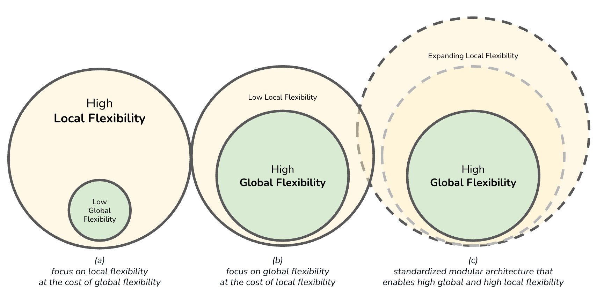

Enterprise Architecture as Strategy
IN THIS SECTION, YOU WILL: Learn that the relationship between business strategy and IT architecture is dynamic and requires continuous realignment, leveraging different operating models, flexibility strategies, and IT maturity stages to maximize efficiency, agility, and strategic value.
KEY POINTS:
- Business Operating Models: Organizations can structure their IT and business processes around four models—Diversification, Coordination, Replication, and Unification—depending on their need for standardization and integration.
- Global vs. Local Flexibility: Companies must balance global efficiency with local adaptability by implementing modular architectures and governance structures that support both.
- Stages of IT and Strategy Alignment: Organizations evolve from business silos (fragmented systems) to business modularity (strategic agility), with increasing levels of IT-business integration.
- IT’s Strategic Role: IT architecture serves as a key enabler for business execution, operational efficiency, and innovation, requiring alignment with the company’s operating model and strategic goals.
- Evolving IT Maturity: Progressing through IT maturity stages demands investment in technology, governance, and cultural shifts, ensuring seamless integration between business and IT functions.
The relationship IT and business is dynamic, where business needs shape IT solutions, and technological advancements influence strategic opportunities. New technology also requires changing how it is managed, as traditional management approaches may not suffice for emerging technologies’ unique demands. Effective alignment requires integrating processes with systems, adapting workflows to leverage technology, and fostering collaboration between business leaders and IT teams. As both evolve, continuous realignment ensures organizations remain agile and competitive, maximizing the mutual value of business and IT.
In business strategy and IT architecture, I often draw inspiration Enterprise Architecture as Strategy: Creating a Foundation for Business Execution by Jeanne W. Ross, Peter Weill, and David C. Robertson.
I use several key concepts from these works that shape my understanding of the relationship between business strategy and IT architecture.
Business Operating Models define how an organization structures its processes and systems to deliver value. These models include Diversification, where business units operate autonomously to address distinct markets; Coordination, where units remain independent but share data and resources to enhance collaboration; Replication, where units function independently while adhering to standardized systems and processes; and Unification, where tightly connected units operate with consistent processes to emphasize efficiency and alignment.
Global vs. Local Business Flexibility highlights the balance between enterprise-wide adaptability and the unique responsiveness of individual units. Global flexibility focuses on an organization’s ability to navigate overarching changes and opportunities, while local flexibility enables departments or regions to address specific needs and challenges.
Stages of IT and Strategy Alignment outline the maturity levels in linking IT and strategy, progressing from fragmented systems to strategic integration. These stages include business silos, characterized by minimal integration; standardized technology, where common platforms exist despite fragmented processes; optimized core, with standardized and integrated processes aligned to the operating model; and business modularity, enabling agility and innovation through modular, reusable components.
These concepts collectively provide a framework for understanding how IT architecture supports and enables strategic business objectives.
Four Types of Business Operating Models
The Operating Model is a core concept in Enterprise Architecture as Strategy, representing how an organization structures its business processes and systems to deliver value. It determines the degree of business process standardization (consistency) and integration (information sharing) across business units. The book introduces the concept of the Operating Model, which defines the necessary level of business process standardization and integration.
 Figure 1: Four types of operating models: diversification (low integration, low standardization), coordination (high integration, low standardization), replication (low integration, high standardization), and unification (high integration, high standardization).
Figure 1: Four types of operating models: diversification (low integration, low standardization), coordination (high integration, low standardization), replication (low integration, high standardization), and unification (high integration, high standardization).
There are four types of operating models (Figure 1):
- Diversification: Low integration, low standardization.
- Coordination: High integration, low standardization.
- Replication: Low integration, high standardization.
- Unification: High integration, high standardization.
Diversification Model
The Diversification Model features low integration and low standardization. Business units operate autonomously, catering to distinct markets or customer bases with little need to share data or processes.
 Figure 2: A high-level core diagram of the diversification operating model.
Figure 2: A high-level core diagram of the diversification operating model.
While it allows maximum flexibility and localized innovation, it misses synergies or cost savings opportunities. Business units operate independently and focus on autonomy to address unique markets or products (Figure 2). This approach is suited for organizations with diverse units serving distinct markets or customer bases, such as holding companies or conglomerates, where operational overlap is minimal.
The model offers flexibility and innovation at the business unit level, enabling rapid adaptation to local or market-specific conditions. However, it comes with challenges and difficulties in achieving cost efficiencies, and potential complexities if integration becomes necessary.

Coordination Model
The Coordination Model emphasizes high integration but low standardization. In this model, business units operate independently while sharing data and resources to ensure collaboration. The focus is on enabling interdependent parts of the organization to work together effectively. This model suits organizations with distinct business units that rely on shared data, such as healthcare systems where hospitals, clinics, and pharmacies collaborate through shared patient records and global supply chains (where inventory and demand data are exchanged across geographically distributed warehouses and suppliers)..
Figure 3: A high-level core diagram of the coordination operating model.
While it fosters informed decision-making and innovation, it demands robust integration technologies and governance mechanisms. It prioritizes collaboration and ensures that different parts of the organization can access and exchange critical information efficiently.
The model supports informed decision-making by enabling access to shared data and fosters innovation at the business unit level without imposing rigid standardization. However, it also introduces challenges, such as managing the complexity of integrating diverse systems and processes and relying on advanced integration technologies and governance structures to maintain cohesion.

Replication Model
The Replication Model combines low integration with high standardization. Business units function independently but follow standardized systems and processes. This model focuses on scalability and consistency, making it ideal for franchise operations like McDonald’s or Starbucks, where each location operates independently within a framework of standardized procedures, and hotel chains, where individual locations follow uniform service and operational guidelines while maintaining some level of independence. It allows for rapid scaling by replicating proven operations, though it can limit information sharing and create inefficiencies if local units require unique processes.
 Figure 4: A high-level core diagram of the replication operating model.
Figure 4: A high-level core diagram of the replication operating model.
The Replication Operating Model combines operational autonomy with standardized processes, systems, or templates (Figure 4). This model facilitates rapid scaling while maintaining consistency by reusing proven processes and systems.

Unification Model
The Unification Model involves both high integration and high standardization. Here, business units are tightly connected and operate with consistent processes, emphasizing efficiency and a unified operating approach. This model suits organizations with centralized structures, such as retail chains, where point-of-sale and inventory systems are standardized across all locations, or airlines, where a consistent customer experience and streamlined operations are critical.
 Figure 5: A high-level core diagram of the unification operating model.
Figure 5: A high-level core diagram of the unification operating model.
The Unification Operating Model is characterized by tightly integrated business units operating with standardized processes, emphasizing efficiency and a single operating approach across the enterprise (Figure 5). Streamlined operations and standardized systems drive cost efficiencies and ensure consistency, improving quality and customer satisfaction. However, this approach can limit the flexibility of individual units and requires substantial investment in unified systems and processes to function effectively.
Choosing an Operating Model
Each operating model offers a distinct balance of standardization and integration. The choice depends on the organization’s strategy, structure, and goals. Implementing the right operating model enables the organization to achieve operational efficiency and strategic alignment.
- Customer Needs: Do customers expect consistency or customization?
- Products/Services: Are products/services similar across units or vary widely?
- Data Requirements: Is real-time data sharing critical for business success?
- Cost vs. Agility: What’s the trade-off between standardization and flexibility?
Global vs. Local Business Flexibility
Global flexibility refers to the organization’s ability to adapt and respond to external changes, opportunities, and challenges that affect the entire enterprise or its overarching strategy. Local flexibility is the ability of individual business units, departments, or regions to respond quickly to their specific needs, opportunities, and challenges (Figure 6). Organizations can (a) focus on local flexibility at the cost of global flexibility,(b) focus on global flexibility at the cost of local flexibility, or (c) implement a standardized modular architecture that enables both high global and high local flexibility.
 Figure 6: Balancing local and global business flexibility.
Global Flexibility
As previously mentioned, global flexibility refers to the organization’s ability to adapt and respond to external changes, opportunities, and challenges that affect the entire enterprise or its overarching strategy. An example is a global retailer implements a centralized inventory management system that provides real-time stock visibility across all regions. This system enables the company to adapt to global supply chain disruptions or launch new global initiatives efficiently.
Global flexibility is characterized by an enterprise-wide perspective that emphasizes solutions, processes, and systems designed to enable adaptability across the organization. This approach ensures that shared capabilities, such as common data standards and unified platforms, are structured to support rapid pivots or innovation.
Key enablers of global flexibility include standardized platforms and technology stacks, unified governance and decision-making frameworks, and enterprise-wide data models with robust integration. These elements create a cohesive foundation that simplifies large-scale transformations and global initiatives. By standardizing processes and technologies, organizations can reduce redundancy and complexity while improving scalability across different regions or business units.
However, achieving global flexibility is not without its challenges. It can sometimes feel rigid to individual business units or regions that require specialized solutions. Additionally, centralized control may slow down localized innovation, potentially hindering responsiveness to unique regional needs.
Local Flexibility
Local flexibility is the ability of individual business units, departments, or regions to respond quickly to their specific needs, opportunities, and challenges. An example is a multinational company operating in different countries that allows its regional offices to customize marketing campaigns based on local cultural preferences and consumer behavior.

Local flexibility is defined by a unit-specific perspective that prioritizes empowering local teams with tailored processes and solutions to address unique demands. This approach emphasizes decentralization and grants autonomy to individual business units or regions, fostering a focus on localized needs and innovation.
The foundation of local flexibility lies in modular systems that support customization, decentralized governance and decision-making frameworks, and well-defined APIs or interfaces that enable seamless integration between local and global systems. These elements allow organizations to adapt quickly to specific market demands or functional requirements.
This flexibility enhances customer satisfaction by addressing local or niche needs, encourages innovation through experimentation, and enables agility in smaller-scale contexts. However, it also presents challenges, such as the risk of fragmentation or duplication of efforts across the organization. Additionally, localized approaches can result in inefficiencies or integration difficulties when attempting to scale solutions at an enterprise-wide level.
Balancing Global and Local Flexibility
The real challenge lies in balancing global and local flexibility to maximize the organization’s effectiveness.
This balance depends on the operating model and the nature of the business.
-
When to Emphasize Global Flexibility: For processes or capabilities that drive enterprise-wide efficiency, compliance, and scalability (e.g., finance, supply chain, IT infrastructure). In industries where consistency and standardization are critical (e.g., pharmaceuticals, aviation).
-
When to Emphasize Local Flexibility: For customer-facing processes or where regional differentiation is a competitive advantage (e.g., marketing, sales, customer service). In highly decentralized industries or organizations with diverse product portfolios.
-
Enabling Both: implement a modular architecture where core systems are standardized, but local modules can be customized. Use a federated governance model that balances central oversight with regional autonomy. Build shared platforms with configurable features to address both global and local needs.
In summary, global flexibility provides consistency and scalability, allowing organizations to respond effectively to strategic changes across the enterprise. In contrast, local flexibility drives innovation and responsiveness by addressing regional or unit-specific requirements. Organizations that balance these two forms of flexibility develop resilient and adaptable architectures, enabling them to support strategic goals at every level.
Stages of Business Strategy and IT Alignment
The Enterprise Architecture as Strategy book identifies four stages of Business Strategy and IT Alignment, with increasing levels of strategic value:
- Business Silos: Independent systems and processes with minimal integration.
- Standardized Technology: Common technology platforms but still fragmented business processes.
- Optimized Core: Standardized and integrated processes aligned with the operating model.
- Business Modularity: Modular, reusable components enabling strategic agility and innovation.
In this context, the concepts of global flexibility and local flexibility refer to different ways organizations balance standardization and customization to achieve efficiency and adaptability (Figure 7).
 Figure 7: Balancing local and global business flexibility in different stages of Business Strategy and IT Alignment.
Figure 7: Balancing local and global business flexibility in different stages of Business Strategy and IT Alignment.
Each stage reflects the level of standardization, integration, and strategic value IT systems provide. Progressing through these stages enables an organization to move from fragmented IT systems to a flexible, reusable architecture supporting strategic goals.
Stage 1: Business Silos
In the Business Silos stage, IT systems and business processes are developed independently within business units, resulting in fragmentation and inefficiencies. There is little to no integration or standardization, and each business unit prioritizes its goals and initiatives.
In this approach, systems are designed specifically to meet the needs of individual business units, with minimal consideration for enterprise-wide goals. Data is often stored in silos, limiting the ability to share information across the organization. IT functions primarily as a support role, addressing local requirements rather than serving as a strategic enabler.
This localized focus presents several challenges, including significant duplication of processes and systems, a lack of visibility and consistency across the organization, and difficulties in scaling or responding effectively to enterprise-wide initiatives. The primary emphasis remains on addressing the immediate needs of individual business units.
Stage 2: Standardized Technology
At the Standardized Technology stage, organizations begin consolidating and standardizing IT infrastructure across the enterprise. This standardization reduces complexity and costs but still lacks a focus on business process integration.

This approach is characterized by a centralized IT infrastructure that relies on shared platforms, tools, and technologies. While business units maintain operational independence, they utilize standardized technology, resulting in reduced IT costs through economies of scale and streamlined support.
Despite these benefits, challenges persist. Business processes often remain fragmented, as standardization efforts primarily focus on technology rather than aligning processes. Additionally, strategic alignment between IT and business objectives is limited. This model’s primary focus is on achieving cost efficiency and ensuring IT reliability through shared infrastructure.
Stage 3: Optimized Core
The Optimized Core stage marks a shift from a technology-driven focus to a business process-driven approach. Organizations standardize and integrate critical processes aligned with the operating model to improve efficiency and coordination across business units.
This model emphasizes standardized and integrated core business processes, such as finance, supply chain, and HR, to ensure consistency across the enterprise. With enterprise-wide data and process alignment, organizations can make more informed decisions, and IT takes on a strategic role in optimizing operations to support the overall operating model.
The benefits include enhanced operational efficiency, scalability, and an improved ability to respond effectively to enterprise-wide initiatives. However, the approach also faces challenges, such as resistance from business units to standardize and integrate processes and the need for significant investment in systems and organizational change. The primary focus is aligning business processes with enterprise-wide goals to drive operational efficiency.
Stage 4: Business Modularity
The Business Modularity stage represents the highest business and IT alignment level. Organizations adopt a modular approach, creating reusable business and technology components that can be quickly reconfigured to support innovation and changing strategies.

This approach is defined by modular and reusable business and IT components, such as APIs, microservices, and plug-and-play processes. It provides high flexibility and agility, enabling the organization to adapt swiftly to new opportunities or disruptions. Business units are empowered to innovate while leveraging shared enterprise resources.
The benefits include increased strategic agility, rapid innovation and responsiveness to market changes, and scalability with lower incremental costs. It also fosters strong alignment between business and IT. However, the approach presents challenges, such as the complexity of designing and maintaining modular components and the need for a mature governance model to manage shared resources effectively. The primary focus is achieving strategic agility and enabling rapid innovation through modularity.
Progressing Through the Stages
Advancing through these stages requires deliberate effort, including investments in technology, process reengineering, and governance. Organizations typically move sequentially but may need to revisit earlier stages when addressing gaps or implementing new strategies.
- From Business Silos to Standardized Technology: Focus on reducing IT complexity and costs by consolidating infrastructure.
- From Standardized Technology to Optimized Core: Shift to aligning processes and systems with the operating model to enhance efficiency.
- From Optimized Core to Business Modularity: Adopt modular architecture to achieve strategic agility and enable rapid innovation.
The maturity stages illustrate the progression of enterprise architecture (EA) from a fragmented IT environment to a strategic enabler of agility and innovation. Each stage builds upon the last, progressively strengthening the alignment between IT and business while enhancing the organization’s capacity to execute its strategic objectives. Advancing to higher maturity stages demands a blend of technological advancements, organizational adjustments, and cultural shifts. Strong leadership and governance are essential to navigate resistance and manage the growing complexity associated with this evolution.
By progressing through these stages, organizations can achieve operational excellence and strategic agility, enabling them to thrive in a rapidly changing business environment.
To Probe Further
- Enterprise Architecture as Strategy: Creating a Foundation for Business Execution by Jeanne W. Ross, Peter Weill, and David C. Robertson, 2006.
- A New Way to Think: Your Guide to Superior Management Effectiveness by Roger L. Martin, 2022.
Questions to Consider
- Which business operating model (Diversification, Coordination, Replication, or Unification) best describes your organization’s current approach? Is it the right fit for your strategy?
- How does your organization balance global and local flexibility in its IT and business operations? Where are the biggest challenges?
- What stage of IT and strategy alignment is your company currently at—Business Silos, Standardized Technology, Optimized Core, or Business Modularity?
- How well is your IT architecture aligned with your company’s business strategy, and what gaps exist?
- What are the trade-offs your organization faces between efficiency (global standardization) and responsiveness (local flexibility)?
- How do governance, security, and compliance factor into your company’s IT-business alignment efforts?
- What challenges arise when transitioning from fragmented IT systems to a more integrated enterprise architecture?
- How does your company ensure that its technology investments support both immediate business needs and long-term strategic goals?
- What role does modular architecture play in improving your organization’s agility and ability to innovate?
- How can IT leaders and business executives better collaborate to ensure continuous realignment between technology and strategy?
On Strategy ← On Strategy |
On Strategy Hunting the Ghost of Business Architecture → |